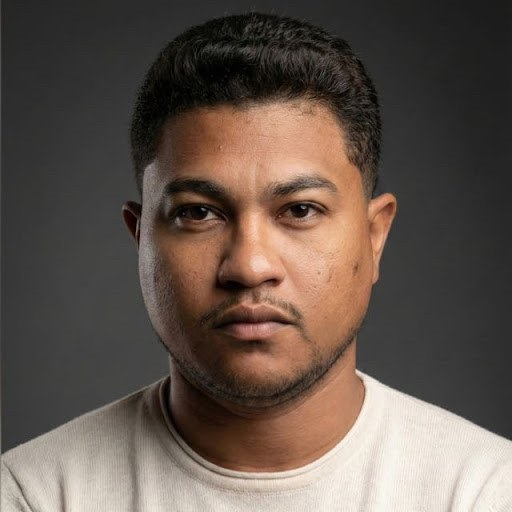
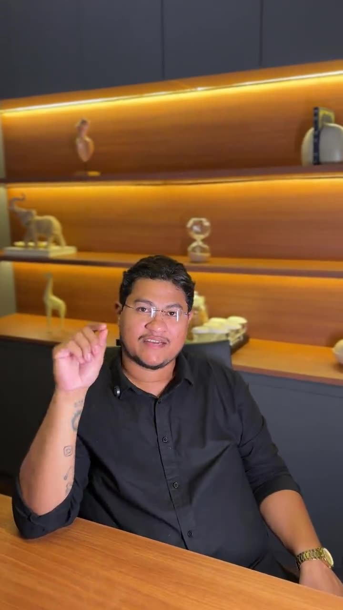
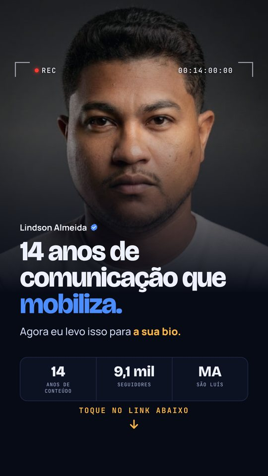

Identidade visual
Lindson
Almeida
Comunicação que mobiliza e engaja.

Neste volume
Um sinal,
doze capítulos.
- 03Manifesto
- 04Pilares
- 05Voz e escrita
- 06Assinatura
- 07Cores principais
- 08Cores de apoio
- 09Tipografia
- 10Hierarquia
- 11Grafismos
- 12Fotografia
- 13Stories
- 14Mini site
Comunicação que mobiliza e engaja.
criando conteúdo que faz gente se mover, da rua às redes.
pessoas acompanhando no Instagram, com perfil verificado.
O Maranhão é o meu território. É daqui que o sinal parte.
Três ideias guiam cada peça
A marca se comporta como
um sinal no ar.
No ar
Tudo parece acontecer agora: visor de câmera, timecode correndo, bastidores em vídeo.
Sinal que se espalha
Ondas saindo da foto e uma rede de pontos conectados mostram alcance e mobilização.
Território
O Maranhão aparece como fato, não como enfeite: São Luís, coordenadas, a sigla MA.
Como falamos
Direto, próximo
e com prova.
“Sua bio merece um upgrade.”
Fala com você · virada em uma palavra“14 anos de comunicação que mobiliza.”
Autoridade com número exato“Responda este story com ‘EU QUERO’.”
Chamada que diz o gesto“Soluções inovadoras em comunicação 360°.”
Jargão sem prova · não usamosEscuro por padrão.
Azul assina, âmbar chama.
Fundo de tudo: mini site, posts, Stories. A marca vive no escuro, como um estúdio com a luz apontada para quem fala.
- HEX
- #070B16
- RGB
- 7 · 11 · 22
- Uso
- ≈ 70%
A assinatura: anel da foto, ondas, ícones e palavras-chave.
- HEX
- #4C8DFF
- RGB
- 76 · 141 · 255
- Uso
- ≈ 10%
A ação. Um elemento por tela.
- HEX
- #FFB547
- RGB
- 255 · 181 · 71
- Uso
- ≈ 5%
Paleta estendida
Cada cor tem
um único trabalho.
Três vozes, três papéis
Escala para Stories e posts · base 1080 px
Instrumentos, não enfeites.

Bastidores · véu ink 30% → 82%Regras
Curiosidade, desejo,
confiança, ação.

Faça assim. Nunca assim.
Lindson Almeida